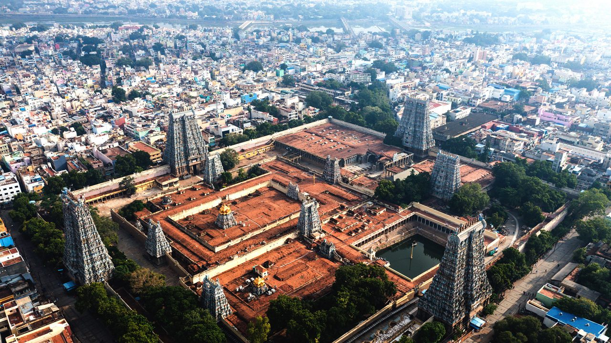
Madurai Meenakshi Amman Temple
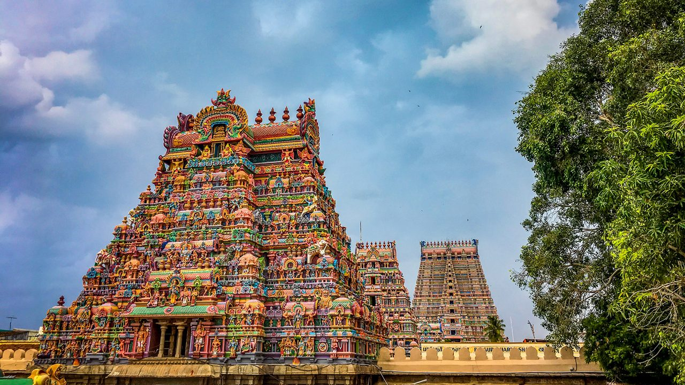
Srirangam Ranganathaswamy Temple
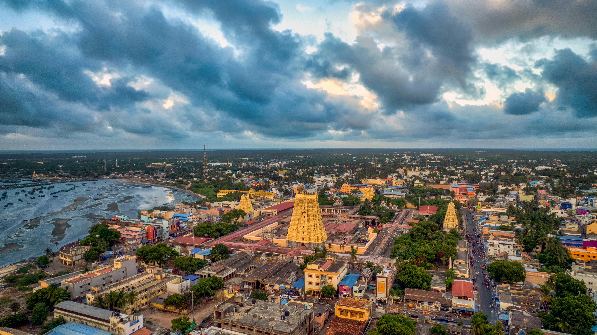
Ramanathaswamy Temple (Rameswaram)
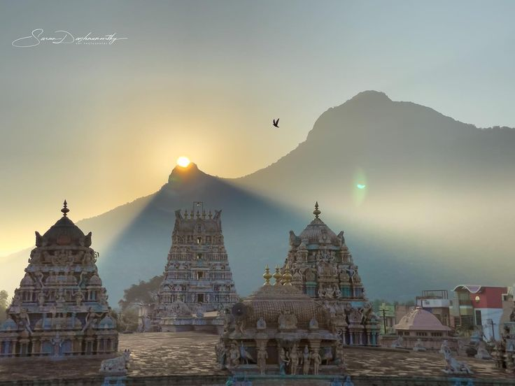
Arunachaleswarar Temple (Thiruvannamalai)
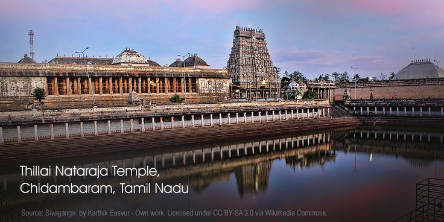
Thillai Nataraja Temple (Chidambaram)
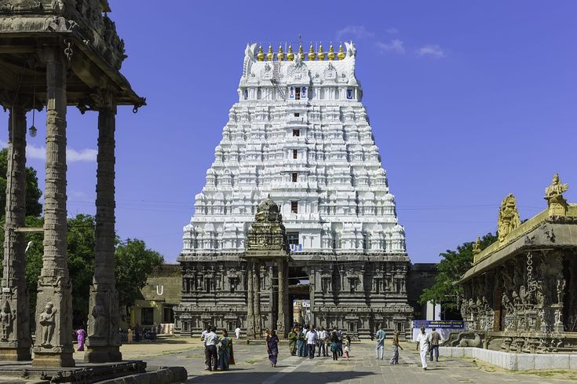
Kanchi Kamakshi Temple (Kanchipuram)
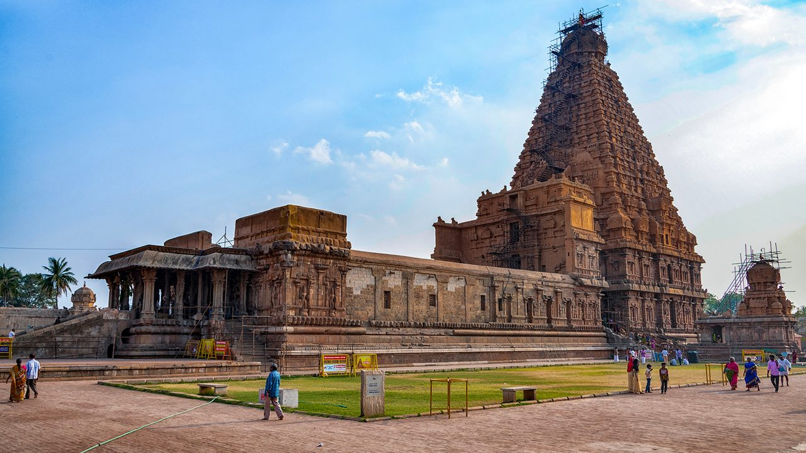
Brihadeeswarar Temple (Thanjavur)
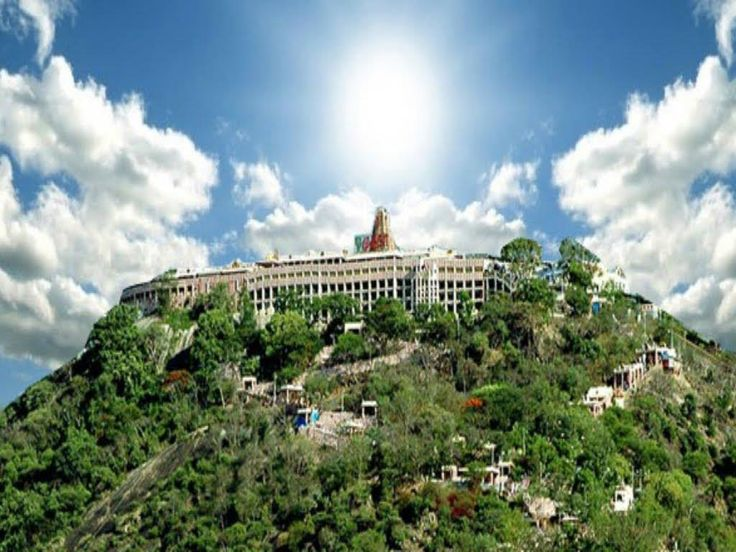
Palani Murugan Temple
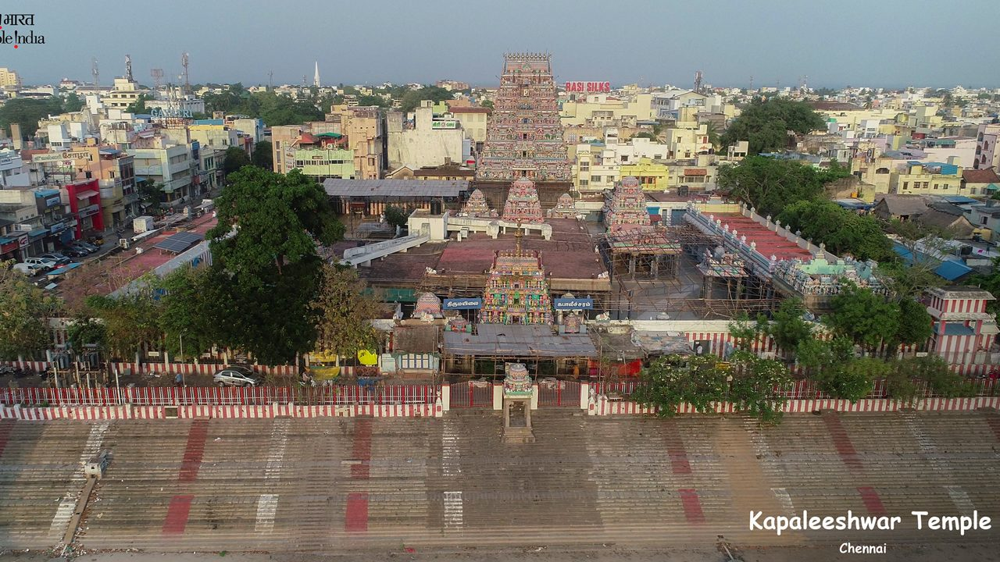
Kapaleeshwarar Temple (Chennai)
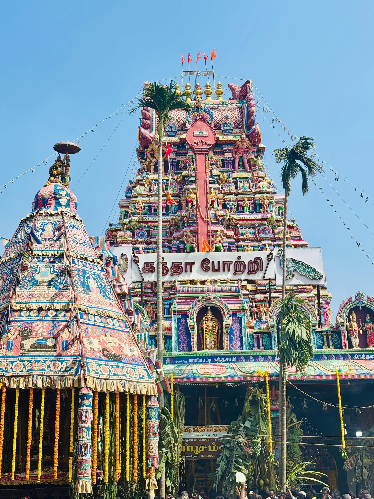
Tiruchendur Murugan Temple
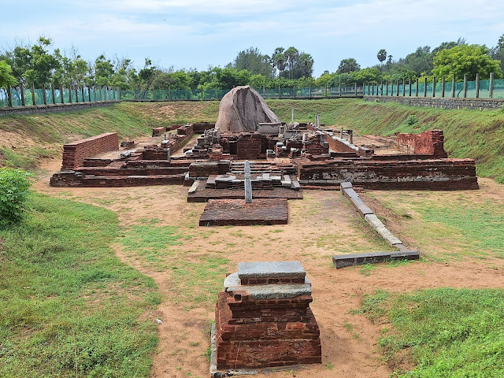
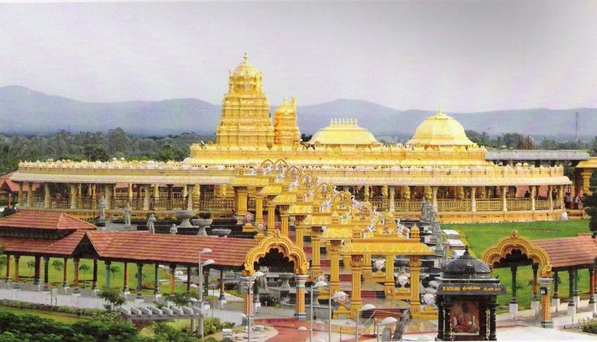
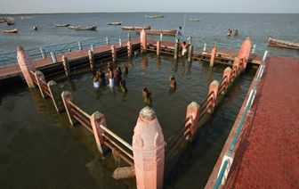
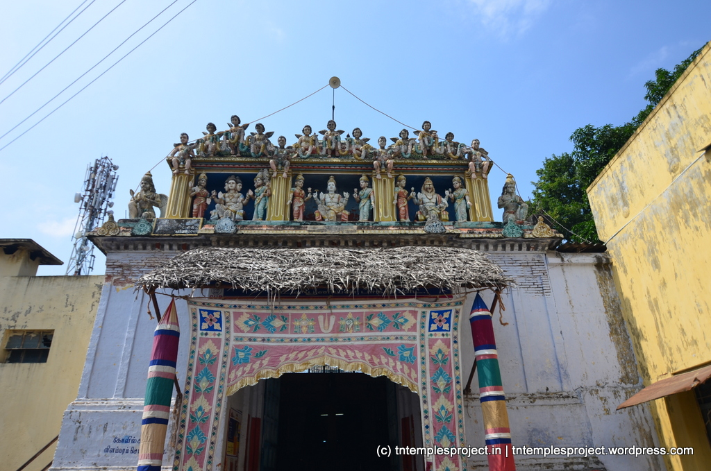
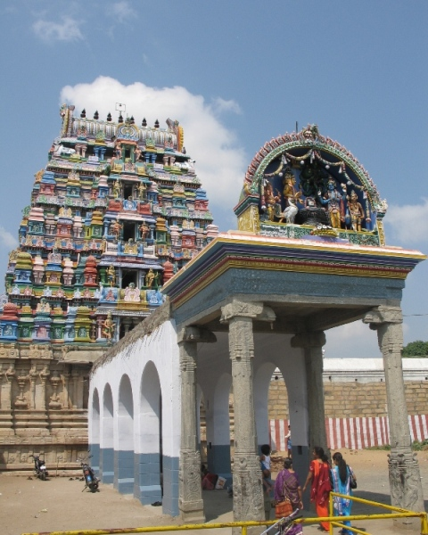
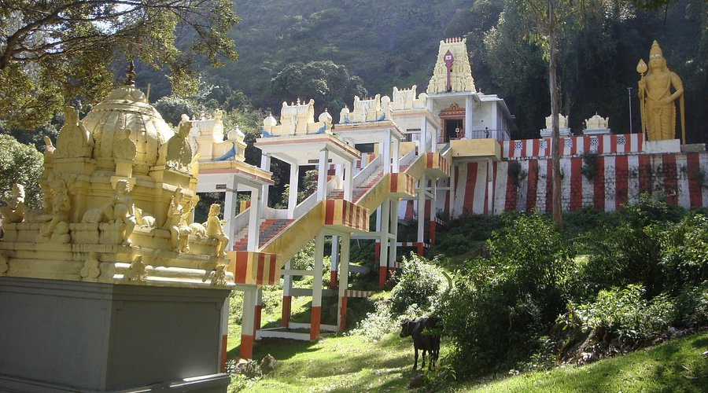
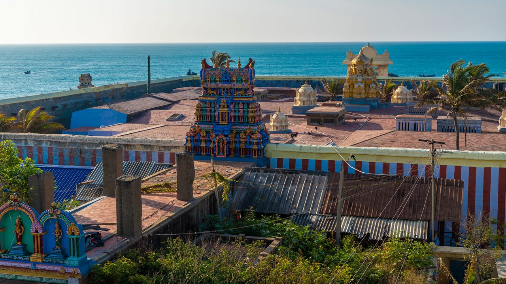
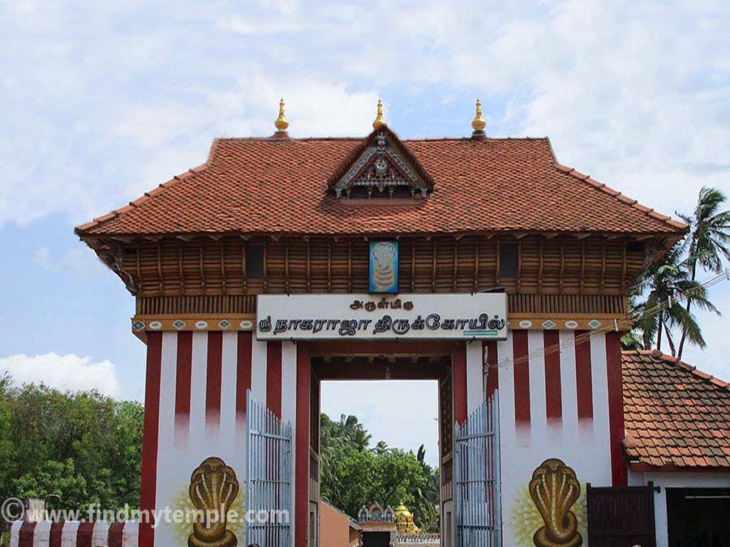
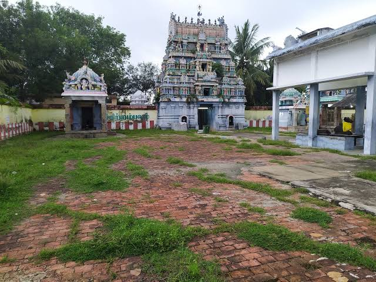
Meenakshi Amman Temple, is a historic Hindu temple located on the southern bank of the Vaigai River in the temple city of Madurai, Tamil Nadu, India.
The temple is at the center of the ancient temple city of Madurai mentioned in the Tamil Sangam literature, with the goddess temple mentioned in 6th century CE texts.
The restored complex now houses 14 gopurams (gateway towers), ranging from 4550m in height, with the southern gopura tallest at 51.9 metres (170 ft).
Sri Ranganathaswamy Temple, also known as Thiruvaranga Tirupati, is one of the most illustrious Vaishnav temples in the country, dedicated to Ranganatha, a reclining form of Hindu deity, Lord Vishnu.
The temple's compelling story dates back to the epic times of Lord Rama, who, after vanquishing the demon king Ravana, entrusted a sacred idol of Vishnu to his brother Vibhishana.
This is the first and foremost among the 108 Divya Desams dedicated to Bhagwan Vishnu.
The Ramanathaswamy Temple in Tamil Nadu houses the Rameshwaram Jyotirlinga which is a part of the Bada Chardham Yatra for Hindus along the 12 Jyotirlingas of India.
The Jyotirlinga of Rameshwaram lies on the Pamban island of Tamil Nadu and people need to cross the Pamban bridge to reach the temple. Rameshwaram Temple has great significance among its devotees as it is a perfect example of belief, mythology and architecture.
Both the Jyotirlinga Shrines of Ramalingam and Vishvalingam are placed side by side inside the sanctum where the idol of Vishvalingam is worshipped before the Ramalingam.
The Ramanathaswamy Temple in the south represents Lord Rama's unbreakable devotion to Lord Shiva, as evidenced in its name, which means 'Master of Rama'.
Other deities like 'Lord Vinayaka', 'Lord Subrahmanya', and 'Parvathavardhini' also grace the temple.
The temple surrounds many other significant sites such as ‘Agnitheertham’, ‘Gandhamadhana Parvatham Temple’, ‘Panchmukhi Hanuman Temple’ and ‘Rama Setu’ among others.
No Hindu’s journey is complete without a pilgrimage to both Varanasi and Rameswaram for the culmination of his quest for salvation and is hallowed by the epic ‘Ramayana’.
The history of the temple dates back to the 12th century when the construction of the temple began on Pamban Island and was completed in different eras by different rulers.
According to a fascinating tale, the city of Rameshwaram became holy when Lord Rama started worshipping Lord Shiva after returning from Lanka where he defeated the Demon King Ravana.
To get rid of his sin of killing Ravana and asking for penance, Rama started worshipping the Shivling. Hanuman was asked to bring a Shivling from the Himalayas but he delayed so in return, Goddess Sita made a Shivling out of the sand.
Temple Timings: 04:30 AM to 09:00 PM
Nearest Airport: Madurai Airport
Nearest Railway Station: Rameshwaram Railway Station
Special Attraction:
● The festivals of Maha Shivaratri, Thirukalyanam, Mahalaya Amavasai and Thai Amavasai are celebrated with deep devotion and zeal.
● Devotees visiting the site must take a dip in the sacred 22 ‘theerthams’ (holy water tanks) before entering the inside structure of the Shivling.
Annamalaiyar Temple is situated at the foothills of a 2668 feet high hill in Tiruvannamalai, a holy city in South India and one that can bring salvation.
The Earth is composed of five elements: Earth, Fire, Water, Air, & Ether. Arunachala is one of the sacred Pancha Bootha Sthalas representing Agni (Fire)
| Element | Temple Location |
|---|---|
| Earth (Prithvi) | Kanchipuram (kanchi) |
| Water (Jalam) | Jambukeswaram |
| Fire (Agni) | Tiruvannamalai (Arunachalam) |
| Air (Vayu) | Srikalahasti |
| Space (Akasham) | Chidambaram |
Tamil Nadu, is uniquely dedicated to Lord Shiva as the cosmic dancer (Nataraja).
The temple is home to one of Hinduism's greatest mysteries. To the right of the Nataraja idol is a secret space concealed by a black curtain.
Unlike most Shiva temples that feature a classic lingam, the main sanctum houses a bejewelled anthropomorphic idol of Shiva in the Ananda Tandava (the cosmic dance of bliss).
The Goddess is worshipped as the supreme form of Adi Parashakti.
Shri Kanchi Kamakoti Peetham was established by Sri Adi Sankara in the year 482 BCE. (see About and History) and has the distinction of an unbroken line of 71 Acharyas
Goddess Kamakshi epitomizes the vibrant and limitless glory of creation. She is a magnificent manifestation of Sattva – The very existence or Being. Mookacharya, in his work named Mooka Panchasati.
Brihadeeswara Temple, a masterpiece of Dravidian architecture, is one of India's most prized architectural treasures. Built in the early 11th century by Raja Raja Chola I
The vimana (tower) rises to a height of 216 feet (66 meters), making it one of the tallest of its kind in the world.
The Brihadeeswara Temple features a massive colonnaded prakara (enclosed corridor) and houses one of India’s largest Shiva Lingas.
The Palani Murugan also known as the Arulmigu Dandayudhapani Swami Temple.
The idol depicts Murugan as a young boy named Dandayudhapani who has renounced all worldly possessions.
The famous temple offering (Panchamirtham) is a unique jam-like mixture of five natural ingredients (banana, jaggery, cow ghee, honey, and cardamom) with a famously long shelf life.
Kapaleeshwarar Temple is one of the most significant and ancient temples in Chennai, India. It is located in Mylapore, which is one of the oldest and most culturally-rich areas of Chennai.
The temple is dedicated to Lord Shiva, who is worshipped in the form of a lingam. The name Kapaleeshwarar is derived from two words, ‘kapalam’ (skull) and ‘Eeswarar’ (Lord Shiva), which means ‘lord of the skull’.
It is one of the only few temples in India which houses various avatars of Lord Vishnu and Lord Shiva within the same boundary.
The shrine at Thiruchendur was built as a symbol to mark the victory of Lord Murugan over the demon king Surapadman after a long vicious battle.
There are nine Kalasams a top the Gopuram to indicate that the Gopuram consists of 9 storeys.
It is widely recognized as one of the oldest structural temples in South India and the oldest known Murugan shrine.
Excavations by the Archaeological Survey of India (ASI) at this Wikipedia site uncovered terracotta lamps, a greenstone Shivalinga, and a rare plaque depicting the Kuravai Koothu dance.
Located near the Tiger Cave, this open historical site allows visitors to worship and explore year-round.
Sri Sakthi AMMA had established Om Sakthi Narayani Siddar Peedam Charitable Trust, popularly regarded as Sri Narayani Peedam in the year 1992.
Holy water from all the major rivers of the country was brought together into one holy pond called 'Sarvatheertham,' as a major source of evolution.
The Golden Temple is situated in a 100-acre lush green landscape in the middle of a star-shaped path, such that it absorbs maximum energy from the nature.
Navapashanam temple is a Hindu temple dedicated to Navagrahas, the nine planetary deities, located in Devipattinam.
According to Hindu legend, Lord Rama installed the nine planetary deities in the sea here to pray for success in his battle against the demon king Ravana.
Dedicated to the nine planets, this unique shrine is built directly inside the Bay of Bengal.
Sri Vedanarayan Perumal Temple, also known as Brahma Temple, is a Hindu temple located in the town of Kumbakonam, Tamil Nadu.
The Brahma Temple is a small temple faces east with an entrance arch with stucco images of Narayana Perumal, Brahma, and Yoga Narasimha with their consorts.
Parents particularly honor Lord Brahma and Goddess Saraswati, seeking success and prosperity for their children as they embark on their educational journeys.
The vast Hindu mythology passes on a unique connection between the Tirupattur Sri Brahmapureeswarar Temple and Lord Brahma, one of the Trimurthi and the God of Creation, losing his fifth head!
Legend has it that Lord Brahma regarded himself as the supreme power and took pride against Lord Vishnu and Lord Shiva for being the creator of the universe.
The 12 Shiva lingams consecrated and worshipped by Lord Brahma in this temple include: Sri Brahmapureeswarar, Sri Sudharaneswarar, Sri Arunachaleswarar, Sri Pazhamalai Nathar, Sri Ekambareswarar, Sri Thayumanavar, Sri Kalathi Nathar, Sri Pathala Eswarar, Sri Manduga Nathar, Sri Kailasa Nathar, Sri Sabthagereswarar, Sri Jambukeshwarar
It’s a Hindu temple that features brilliant architecture along with a 40-feet tall statue of Lord Murugan standing proudly outside the area of the site.
The magical setting of this temple allows you to forget everything as soon as you step inside the temple
In addition, one can seek blessings from the other presiding deities as well at this temple as it has the idols of Goddess Shakti, Lord Ganesha, and Lord Shiva.
The sacred dwelling place of the Virgin Goddess Devi Kanya Kumari, this temple is also one of the 108 Shakti Peethas.
This temple's historical and religious significance dates back more than three thousand years and is immense.
On the last Friday of the Tamil month of Aadi (July–August), the idol is completely covered in a special sandal paste.
The Nagaraja Temple in Nagercoil, Tamil Nadu, is a highly revered ancient shrine dedicated to the serpent king, Nagaraja.
This temple is dedicated to Nagaraja, the serpent deity, and is a unique blend of Dravidian and Kerala architectural styles.
The temple's serene ambiance and intricate carvings create a truly mesmerising experience.
Lord Ganesha, our foremost deity with an elephant head, blesses us with wisdom and prosperity at every beginning. He can be seen in every part of the country, even in street corners, as he protects us from obstacles. In the vibrant spiritual landscape of Tamil Nadu, the Adhi Vinayagar Temple or Muktheeswarar temple in Koothanur holds a mystical and unique place. Also known as Naramuga Vinayagar, this shrine is dedicated to a rare and ancient form of Lord Ganesha with a human face—a form few have seen, but one that resonates deeply with history and divine symbolism.
Long before he was known as the elephant-headed remover of obstacles, Lord Ganesha was a radiant human child created by Goddess Parvati. When Lord Shiva, unaware that this boy was his own son, returned home and was denied entry, his anger led to a tragic beheading.
Moved by Parvati’s grief, Lord Shiva replaced the head with that of an elephant, thus giving rise to the beloved form we all know today.
However, in Koothanur, Lord Ganesha is worshipped in his earliest avatar — the form before the elephant head. Aptly known as “Naramuga Vinayagar” (Naram – Human, Muga – Face), this ancient idol stands as a powerful symbol of mythology and divine grace.
Nestled near the sacred Thilagapathi Temple is a rare and powerful shrine dedicated to an extraordinary form of Lord Ganesha—Aadhi Vinayagar. This unique idol stands apart, as Ganesha is portrayed without his iconic trunk (thumbikkai), with his right leg hanging down, his left leg bent, his left hand resting on his knee, and his right hand raised in the Abhaya Mudra, a divine gesture of protection. This form is not seen anywhere else in the world. The temple's sanctity is further elevated by the belief that Sage Agastya Rishi visits on every Sankatahara Chaturthi to worship this divine form in both physical (sthoola) and subtle (sookshma) manifestations.
In addition to its connection with Ganesha, the temple is also revered as a Devara Sthalam, praised in the Devaram hymns and dedicated to Lord Shiva. It is one of the seven most auspicious sites—alongside Varanasi, Rameswaram, Srivanchiyam, Thiruvenkadu, Gaya, Thiriveni Sangamam, and Thilatharpanapuri—where performing Pitru Tarpanam (ancestral rites) is considered highly beneficial. What makes this temple even more exceptional is its deep connection to Lord Rama. At this very temple, Lord Rama performed Tarpanam for Dasharatha, offered the pindams in reverence to Mother, Father, Guru, and God, and they miraculously transformed into Shiva Lingams. This blend of mythological significance, divine energy, and rare iconography makes the Aadhi Vinayagar Temple a truly exceptional spiritual destination.
Maha Shiva Ratri and Ganesha Chathurthi are the main festivals organized in this temple.
Every Thursday, special pujas are conducted for Adhi Vinayagar, drawing devotees from near and far. The temple’s origins are said to predate the 7th century, cementing its place as one of Tamil Nadu’s oldest Ganesha temples.
Address: Sethalapathy, Poonthottam P.O, Nannilam Taluk, Thiruvarur District, Tamil Nadu 609503.
Temple Timing: Temple opens from 7:00 AM to 12:45 PM, and from 4:00 PM to 8:30 PM.